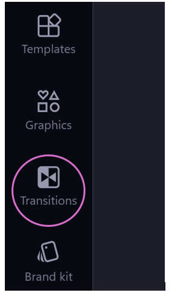
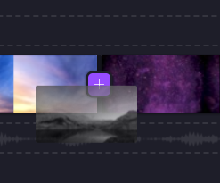
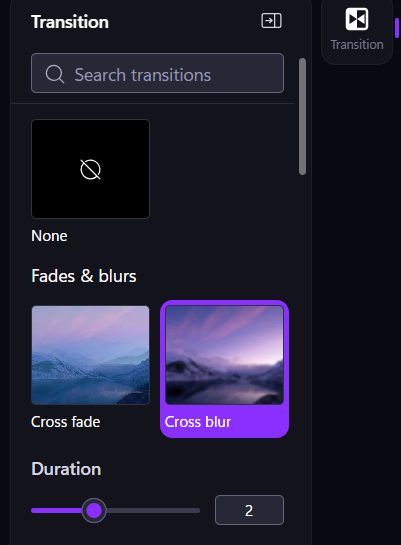

In the video editor, ensure that you have two video clips or images directly next to each other, with no gap in between.
Click the Transitions tab in the panel on the left. A selection of transitions appears.

Drag and drop transition on the + icon between two clips or images to add it to the editing timeline.

Controlling the timing of transitions
Select a transition.
Click on the Transition tab in the panel on the right. The transition settings open.

Drag the Duration slider to adjust the duration of the transition.